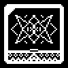
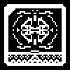

/RECOV/LOG/NESCIUS
CHATROOM 1338 ARCHIVE
RECOVERED CONVERSATION FROM MESSAGE SERVER M0T ( CODENAME: MORTIS )
( ~2 Months Ante Ruina )

NESCIUS Have you considered that man is now at the threshold of immortality?

ORTHNA Through medicine?
NESCIUS No, screw medicine! Why would we try to repair these flawed vessels? God gifted us life but cursed us to rot!
ORTHNA Such is the duality of all creation.
NESCIUS And such it has become man's responsibility to condense all into singularity. We prune the curses of God and bathe in his divine fortune.
ORTHNA Have you considered each dichotomy is necessary? Both pieces of a duality need one another to justify their own existence. What is life without death?
NESCIUS We have created that false sense of structure to justify our antithesis. The gods have no issue with immortality, they need no opposition to justify their existence!
ORTHNA We are not gods.
NESCIUS We could be.
ORTHNA I almost admire your conceit. Besides, if not medicine, what elixir of life are you preaching?
NESCIUS The advent of the internet!
ORTHNA Enlighten me to how such a technology could be the secret to eternal life
NESCIUS The world underestimates the internet. I do not blame them, for they do not fundamentally understand it. It's so much more than a collection of computers. It's a collection of people, an abstract society! We have built a realm of human perfection, devoid of our putrid vessels. Man should only be the culmination of his psyche, and yet this world constrains us with material bodies that have physical strengths and needs. Why must we be defined by these bodies? Our spirit deserves to be free! Mankind has finally created an exit, our own stroke of light, our own creation.
ORTHNA We still interface with the internet with our physical bodies. Regardless of your celestial depiction of the internet, it is still an abstract. There is no realm, our spirit is tied to our bodies, and those bodies perceive the internet. We are twice removed from this world you preach of.
NESCIUS You believe that to be a constant. I disagree, for our senses are ultimately unified by the brain. We may interface the internet, but our perceptions are built within the mind. What is stopping us from eventually directly signaling the brain, the soul?
ORTHNA The brain is as prone to rot as the rest of our bodies.
NESCIUS The brain is simply a computer. It is only a matter of time before we recreate it with technology free from the curse of decay. We have created a new home for the spirit, now we simply need to move in. God can no longer touch us.
ORTHNA And what makes man deserving of immortality?
NESCIUS What makes us more deserving than simply our ability to? If the heavens did not want us to reach this state they would have struck us down already.
ORTHNA You are so caught in your own hubris that you prepare to abandon your temple. You are not deserving, you are defiling the craftsmanship of God, betraying him for an illusion of immortality. The only men who live for eternity live in the grasp of the devil.
NESCIUS I would rather go with the outcasted angels, for no curse is more agonizing than death's hand.
ORTHNA Let us say that your fantasy comes true. What would you do with an infinite life in a world of all knowledge?
NESCIUS Revel in Deaths defeat, utilize the full power of my imagination.
ORTHNA But for what purpose? This paradise you believe in brings no incentive to exercise your creativity. You are stuck in a endless void where nothing matters, the end of death is the end of purpose. That is a greater curse than decay. I would argue that decay is a blessing, a necessary push for us to be creative, to use our limited time. This society you dream of is a hell.
NESCIUS Without this step, how will man ever reach their full potential?
ORTHNA Full potential in what? Their false creation, their dream?
NESCIUS Regardless of what you believe Orthna, this is the future, the inevitable next step of humanity. We have never been good at justifying our existence, understanding our purpose. How is our world different than the internet from your perspective? Nothing matters here either. It is the same curse regardless, entropy will erase any purpose we give ourselves in this realm. If you cling to your mortal ways that anguish will never end. Maybe with all the time in the world, all the knowledge in the world, we will know our purpose.
ORTHNA Or we will have all the more time to lie to ourselves.
NESCIUS One day you will see that I am right Orthna. For now however, I must be on my way.
ORTHNA I could say the same to you, Nescius. Goodbye.